Вертикализатор для детей с ДЦП Akcesmed Котенок 2 INVENTO Kt-2
Вертикализатор КОТЕНОК 2 INVENTO - делает возможным индивидуальный подход к потребностям ребенка и его семьи. Соответствующая конфигурация этого устройства дает возможность принятия вертикального положения с поддержкой сзади или спереди. Подбор нужной для ребенка поддержки дает позитивное влияние, необходимое для дальнейшего развития.
Выезд специалиста сборка и настройка коляски индивидуально под Вашего ребенка бесплатно
Изменение настройки устройства и регулировка угла наклона, благодаря применению пневматики, дает возможность плавно поднять ребенка из положения лежа в положение стоя. Система подушек и ремней надежно фиксирует тело ребенка, позволяя принимать пищу, играть или учиться стоя. Изделие произведено из безопасных для пациента экологичных материалов, а раскраска полностью ручной работы.
Каждому покупателю колясок для детей с ДЦП мы выдадим всю необходимую для предоставления в ФСС документацию. Это позволит вам получить компенсацию финансов, затраченных на приобретение средства передвижения.
Ключевые характеристики вертикализатора для детей с ДЦП Котенок 2 INVENTO
-
Стабильная конструкция
- - Изделие обеспечивает надлежащую стабилизацию и безопасность
-
Экологические материалы
- - В производстве мы используем только безопасные для человека и окружающей среды материалы
-
Эффективная вертикализация
- - Применение в изделии четырехзвенного механизма и газовой пружины обеспечивает эффективную вертикализацию пациента
-
Тихая работа
- - Примененная в изделии газовая пружина или электроподъемник работают почти бесшумно
-
Объемная обивка
- - Обивка из дышащей, пропускающей воздух ткани. Теперь есть уверенность в том, что кожа будет оставаться сухой дольше
-
Простота в использовании
- - Благодаря применению в изделии четырехзвенного механизма и газовой пружины, вертикализатором легко пользоваться. Для того чтобы поднять пациента в вертикальное положение нужно просто нажать педаль газовой пружины
-
Пневматический подъемник
- - Газовая пружина помогает установить нужный угол наклона устройства
-
Передняя/задняя вертикализация
- - Изделие позволяет вертикализировать пациента с поддержкой сзади или спереди
-
Подножки с регулировкой в трех плоскостях
- - Подножки с 3D регулировкой позволяют корректировать положение стоп во всех плоскостях
-
Гарантия 24 месяца
- - На изделие предоставляется 24-месячная гарантия. Мы также предоставляем послегарантийное обслуживание
Возможности вертикализатора Akcesmed Котенок II INVENTO
- Вертикализация с поддержкой сзади или спереди
- Устройство "вырастает" вместе с ребенком
- Регулируемый угол наклона столика
- Низкая подножка облегчающая вставание
Отличительные особенности дышащей обивки
- Легкая
- Антиаллергичная
- Натуральная защита от плесени
- Антибактериальные свойства
- Легко поддерживать чистоту
- Легкая дизинфекция
- Широкая регуляция твердости и упругости
- Простой рециклинг
- Очень прочная
- Устойчива к деформациям
Вертикализатор Котенок 2 рекомендуется для детей и подростков с диагнозом
- Детский церебральный паралич – различные формы
- Расщепление позвоночника
- Повреждения головного и спинного мозга – различной этиологии
- Мышечные заболевания – различные формы
- Генетические синдромы, протекающие с парезами конечностей
- После черепномозговой травмы, травмы позвоночника, спинного мозга и нижних конечностей
Стандартная комплектация вертикализатора для детей с ДЦП Котенок 2
-
Подголовник
- - Предназначен для задней вертикализации
- - Регулируется по высоте
- - Регулируемая ширина
- - Из пены с мягкой обивкой
- - Легкосъемная обивка
- - Возможно приобрести ремень для поддержки головы и хлопчатый чехол на подголовник
-
Грудные пелоты
- - Стабилизируют туловище пациента
- - Поддерживают правильное положение тела
- - Регулировка расстояния между пелотами
- - Изготвлены из пены с мягкой обивкой
- - Легкосъемная обивка
-
Подушка с грудным ремнем
- - Поддержка грудной клетки пациента
- - Регулировка высоты подушки
- - Из мягкой пены, мягкая обивка
- - Легкосъемный чехол для подушки
- - Имеет широкий грудной ремень для фиксации и поддержки пациента, застегивается на липучки и пряжки
-
Подножка с подошвами
- - Подножка имеет регулируемые подошвы с ремнями для фиксации стоп
- - Регулировка высоты подножки
- - Можно купить подошвы с регулировкой в 3-х плоскостях — 3D
-
Бедренные пелоты
- - Фиксируют туловище пациета
- - Поддерживают правильное положение тела во время вертикализации
- - Регулировка расстояния между пелотами
- - Мягкая обивка с пеной внутри
- - Легкосъемная обивка
-
Подушка с бедренным ремнем
- - Стабилизация бедер пациента
- - Регулировка высоты подушки
- - Из пены с мягкой обивкой
- - Чехол с подушки легко снимается
- - Имеет широкий бедренный ремень для поддержки пациента с застежками на липучки и пряжку
-
Стеллаж на колесах с пневматическим подъемником
- - Стеллаж имеет колеса с тормозами и пневматический подъемник для регулировки угла наклона устройства при помощи ножной педали
- - Блокировка педали от случайного нажатия
- - Имеется новая версия стеллажа
-
Фиксатор колен
- - Фиксирует пациента во время передней и задней вертикализации
- - Имеет наколенники с регулировкой их расстояния между собой и опоры для икр
- - Подвижная часть фиксатора блокируется защелкой для простого размещения ребенка в устройстве
- - Легкосъемная обивка
-
Подножка с подошвами
- - Подножка имеет регулируемые подошвы с ремнями для фиксации стоп
- - Регулировка высоты подножки
- - Можно купить подошвы с регулировкой в 3-х плоскостях — 3D
Возможности вертикализатора Akcesmed Котенок II INVENTO
-
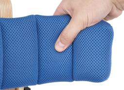
Комфортное пребывание
-
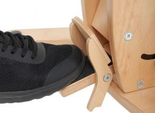
Регулировка наклона
-
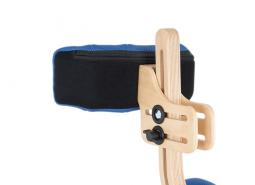
Расположение головы
-
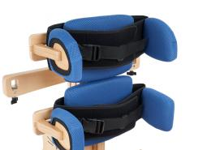
Грудные пелоты
-
Бедренные пелоты
-
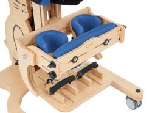
Для детей различного роста
-
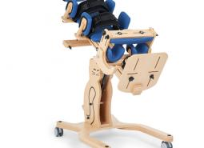
Передняя и задняя вертикализация
-
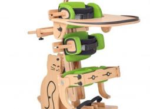
Комплектация
Дополнительное оборудование (аксессуары) вертикализатора для детей с ДЦП Котенок II Инвенто
КОМФОРТ
-
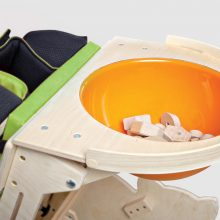
Столик с емкостью для игрушек
СТАБИЛИЗАЦИЯ
-
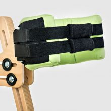
Ремень поддерживающий голову
-
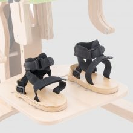
Подошвы с регулировкой в трех плоскостях
БЕЗОПАСНОСТЬ
-
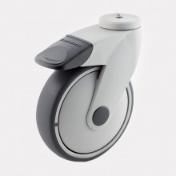
Колесо Танго
-
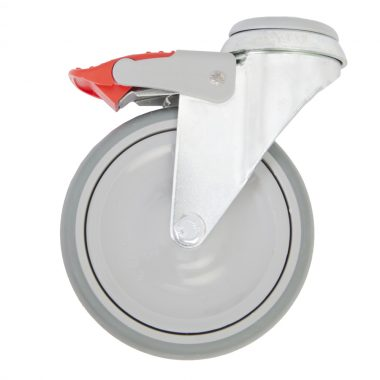
Стальное колесо с тормозом
Таблица размеров вертикализатора для детей с ДЦП Котенок 2
| Символ | Измерение | Размер 1 | Размер 2 | ||
| Передняя | Задняя | Передняя | Задняя | ||
| W | Приближенный рост пациента*, см | 70 - 100 | 80 - 130 | ||
| A/A1 | Ширина между бедренными/грудных пелотами, см | 13 - 27 | 18 - 31 | ||
| C | Регулировка высоты бедренных пелот, см | 30 - 59 | 34 - 59 | 27 - 78 | 40 - 78 |
| C1 | Рег. высоты грудных пелот, см | 46 - 75 | 50 - 75 | 50 - 97 | 65 - 97 |
| B/B1 | Глубина бедренных/грудных пелот, см | 14 | 14 | ||
| D | Высота подголовника, см | 72 - 106 | - | 80 - 135 | - |
| G | Расстояние между коленными пелотами, см | 14 - 23 | 14 - 23 | 14 - 23 | 14 - 23 |
| H | Высота коленных пелот, см | 15 - 31 | 15 - 54 | 15 - 54 | 15 - 54 |
| Угол наклона вертикализатора, ° | 0-90 | 0-90 | |||
| Макс. вес пациента, кг | 35 | 45 | |||
Габариты и вес
| Измерение | Ед. | Размер 1 | Размер 2 |
| Ширина | [см] | 60 | 60 |
| Длина | [см] | 81 | 81 |
| Высота | [см] | 85 | 90 |
| Вес | [кг] | 21 | 21 |
Обеспечим техническими средствами реабилитации по электронным сертификатам
остались вопросы ?
Оставьте контакты и мы скоро свяжемся с вами